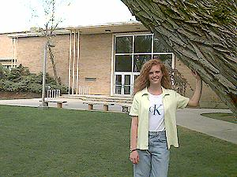

Oscar A. Kirkham Building |
|
 |
The Oscar A. Kirkham building is the second oldest building on campus and houses the Theater Arts Department. Dance and sculpture classes are also taught here. The Kirkham Auditorium is used for many student productions and activities. |